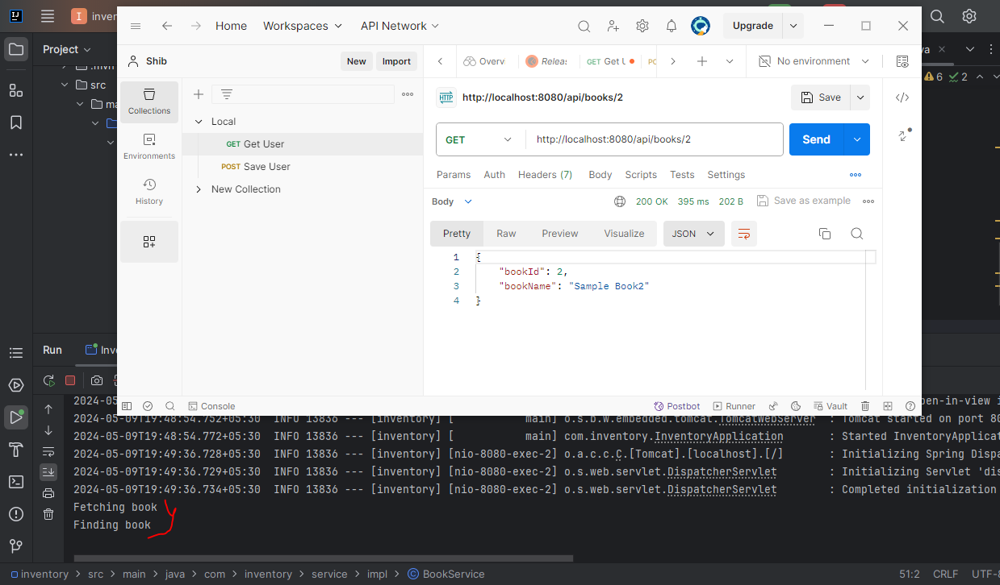

Redis stands for Remote Dictionary Server. It is an open source NoSQL database. It doesn’t have any tables, rows and columns. Also, it doesn’t allow statements like select statement, insert statements, update statements etc.
It stores objects using key/value and basically used to cache and quick-response in an application to speed or increase performance.
Various ways of Redis
In-Memory Database(IMDS) enables minimal response times. It provides responses in microsecond of times. It is the good choice for the application if an application handles the large numbers of traffic.
Advantages:
The cache provides data quickly with high latency to increase the data retrieval performance. Redis is the good choice for caching API calls, session states, and database queries etc.
Advantages:
When a request comes, the code of logic checks in the Redis cache for the desired data. If appropriate data is available in the redis cache, logic simply returns the data from redis cache.
If the requested data is not available/found in the redis cache, the logic falls back to the database or original data source to retrieve the required information to return required data. Subsequently, the fetched data is stored in the Redis cache.
version: '3.7'
services:
redis:
image: redis
volumes:
- ./data:/data
ports:
- "6379:6379"
<dependency>
<groupId> org.springframework.boot </groupId>
<artifactId> spring-boot-starter-data-redis </artifactId>
</dependency>
<dependency>
<groupId> org.springframework.boot </groupId>
<artifactId> spring-boot-starter-cache </artifactId>
</dependency>
import org.springframework.boot.SpringApplication;
import org.springframework.boot.autoconfigure.SpringBootApplication;
import org.springframework.cache.annotation.EnableCaching;
import org.springframework.context.annotation.Bean;
import org.springframework.data.redis.cache.RedisCacheConfiguration;
import org.springframework.data.redis.serializer.GenericJackson2JsonRedisSerializer;
import org.springframework.data.redis.serializer.RedisSerializationContext;
import java.time.Duration;
@SpringBootApplication
@EnableCaching // Annotation need to declare
public class SpringBootMainApplication {
public static void main(String[] args) {
SpringApplication.run(SpringBootMainApplication.class, args);
}
//Need to add below bean
@Bean
public RedisCacheConfiguration cacheConfiguration() {
return RedisCacheConfiguration
.defaultCacheConfig()
//Cache Expiry time
.entryTtl(Duration.ofMinutes(60))
.serializeValuesWith(RedisSerializationContext
.SerializationPair
.fromSerializer( new GenericJackson2JsonRedisSerializer() ));
}
}
import java.io.Serializable;
@Data
@NoArgsConstructor
@AllArgsConstructor
public class Book implements Serializable {
private Integer bookId;
private String bookName;
}
import com.entity.Book;
import org.springframework.cache.annotation.CacheConfig;
import org.springframework.cache.annotation.CacheEvict;
import org.springframework.cache.annotation.CachePut;
import org.springframework.cache.annotation.Cacheable;
import org.springframework.stereotype.Service;
import java.util.ArrayList;
import java.util.List;
import java.util.Optional;
@Service
@CacheConfig(cacheNames = "book")
public class BookService {
private static List bookList=new ArrayList();
static{
bookList.add(new Book(1, "Sample Book1"));
bookList.add(new Book(2, "Sample Book2"));
bookList.add(new Book(3, "Sample Book3"));
bookList.add(new Book(4, "Sample Book4"));
bookList.add(new Book(5, "Sample Book5"));
bookList.add(new Book(6, "Sample Book6"));
}
@Cacheable(value = "Book", key = "#id", condition="#id!=null")
public Book findById(Integer id) {
System.out.println("Fetching book");
return getBookbyId(id);
}
@CachePut(cacheNames = "Book", key = "#id")
public void updateBook(Book post) {
// updatebook();
}
@CacheEvict(cacheNames = "Book", key = "#id", beforeInvocation = true)
public void deleteById(Integer bookId) {
// delete book
}
private Book getBookbyId(Integer bookId){
System.out.println("Finding book");
Optional book = bookList
.stream()
.filter(b -> b.getBookId()==bookId)
.findFirst();
return book.get();
}
}
import com.entity.Book;
import com.inventory.service.impl.BookService;
import org.springframework.beans.factory.annotation.Autowired;
import org.springframework.web.bind.annotation.*;
@RestController
@RequestMapping(path="/api")
public class BookController {
@Autowired
BookService service;
@GetMapping("/books/{id}")
public @ResponseBody Book findById(@PathVariable("id") Integer postId) {
return service.findById(postId);
}
@PostMapping("/updatepost")
public void updatePost(Book post) {
service.updateBook(post);
}
@DeleteMapping("/posts/{id}")
public void deleteById(@PathVariable("id") Integer postId) {
service.deleteById(postId);
}
}
Start the Spring Boot Application and hit the GET URL on POSTMAN.
You can see that "Finding book" will be prited once time only if you hit the URL multiple times with
the same ID.
The cached will be removed automatically after 60 minutes as the ttl time is configured with 60 minutes
in the bean of cacheConfiguration.
